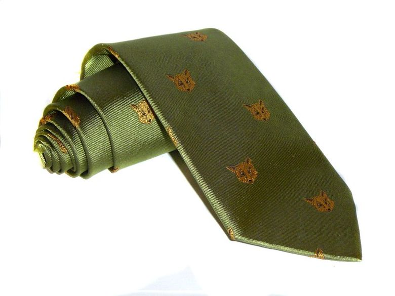
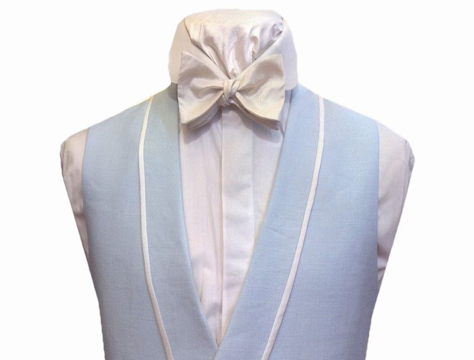
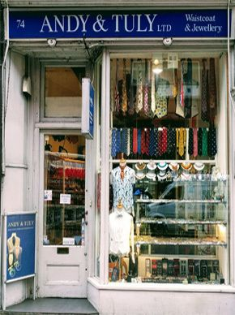

Ties
All ties are hand made by us and we offer a range of woven silk ties with designs exclusive to us.

Hand-Made Woven Silk Tie (Fox Head)£125.00
Black Silk Self-Tie Bow Tie£45.00
Shop ties

A husband and wife operation · open for over 20 years
Our Made to Measure Waistcoat service costs just £25 and the waistcoat would be ready for you to wear within 1-3 weeks, or even less if needed urgently!
Waistcoats
Please take a look at our selection of Waistcoats, all tailor made by us. We have many more designs and colours in store.
* Prices include free delivery
Made to Measure Waistcoat Service
We provide a made to measure Waistcoat service where customers can come in store to get their measurements taken. These measurements will then be used to make a perfectly fitting Waistcoat.
Because we take the measurements and tailor the waistcoats ourselves, customers praise our fast and accurate service. We can accommodate waistcoats for all kind of body shapes and for both male and female customers.
Custom Embroidery Design
Please come in store and discuss custom embroidery design. We can embroider many different designs onto waistcoats and ties, and our service has been very popular with customers.
Our custom embroidery design service allows you to create a waistcoat unique to you, and designs can range from almost anything. Animals, company logos, family crests and many more!
Also in our shop
We have a wide selection of products in store, and a growing selection available online! Please take a look.
All ties are hand made by us and we offer a range of woven silk ties with designs exclusive to us.

All our cufflinks come in a smart Andy & Tuly presentation box and are delivered free of charge anywhere in the UK.
We stock a range of clip and button braces. Please see our online collection or come in store to see many more.
We also sell women's Jewellery and we have an extensive diamond jewellery collection as well as our Nicole Barr range with its high quality glass-enamelling.
See the jewelleryWe're in...
Where to Find Us
It allows you to see in person before purchase, especially with Waistcoats. However, you are welcome to order online also.

Customers have long enjoyed our made to measure Waistcoat service where they can come in store and collect a perfectly fitting waistcoat within 1-3 weeks.